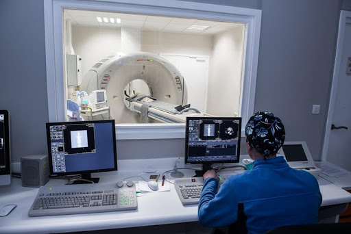
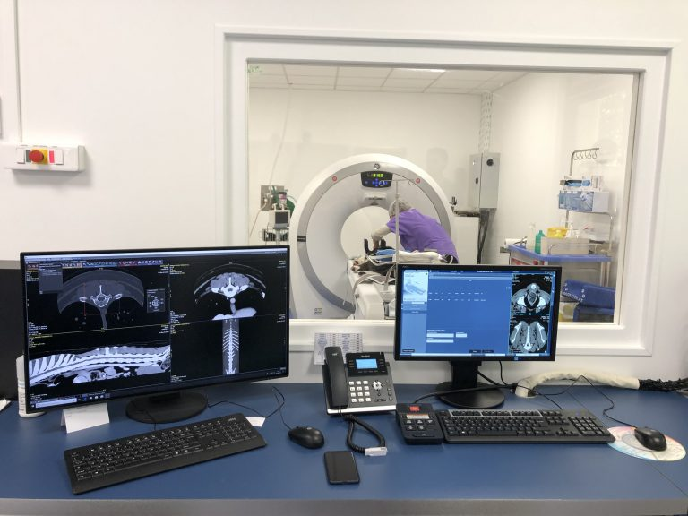

Comment fonctionnent nos appareils de radiographie ?
Le scanner est une technique d’imagerie médicale basée sur les rayons X. À la différence de la
radiographie (qui utilise aussi les rayons X), le scanner permet d’obtenir une image en 3D pour
visualiser de manière plus fine et dé-superposée la zone d’intérêt selon différents plans
Un produit de contraste iodé est injecté au cours de l’examen par voie intraveineuse. Il souligne les
structures vasculaires et apporte ainsi des compléments d’informations sur la structure d’intérêt. Ce
produit peut aussi être injecté dans l’espace arachnoïdien afin de visualiser des maladies compressives
de la moelle épinière (hernie discale par exemple), l’examen est alors appelé myéloscanner.


Déroulé de l’examen
Le moindre mouvement peut être à l’origine d’images floues, c’est pourquoi, en médecine
vétérinaire, les patients sont placés sous anesthésie générale. Il est donc nécessaire d’apporter votre
animal à jeun depuis 12h.
âce à la qualité de notre appareil, l’examen en lui-même est rapide, il ne
prend que quelques minutes pour l’acquisition des images, ce qui minimise le temps anesthésique. La
durée de
l’examen varie selon le nombre de parties du corps à scanner.
Les images sont ensuite exportées dans la
console afin de les analyser et de réaliser des reconstructions. C’est l’interprétation et le traitement
des
images par le vétérinaire qui est le plus long.